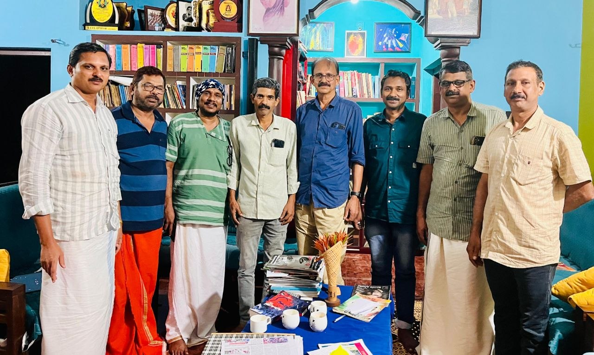

നിലപാടുകൾ വ്യക്തി ജീവിതത്തിലും രാഷ്ട്രീയത്തിലും - ചർച്ചയെക്കുറിച്ച്
"നിലപാടുകൾ വ്യക്തി ജീവിതത്തിലും രാഷ്ട്രീയത്തിലും" - അനൗപചാരികമായിരുന്നു ചർച്ച. പ്രസാദ് മാഷ് തുടക്കമിട്ടു, രാജു സാർ ആരംഭിച്ചു. തുടർന്ന് സംസാരിച്ചവർ, ശ്രീമാൻമാർ (ഫോട്ടോയിൽ കാണുന്നവർ) ഗംഭീരമായ ചർച്ച നടത്തി. പ്രാചീന ഗ്രീക്ക് റോമൻ സംസ്ക്കാരം മുതൽ ഇന്ത്യയും കേരളവും ഉൾപ്പെട്ട ഘനഗംഭീരമായ സൗഹൃദ സംവാദം. മതം, മനുഷ്യൻ, ദൈവം, ആൾദൈവം, കമ്മ്യൂണിസം, വലതുപക്ഷം, ജനപ്രിയ രാഷ്ട്രീയം, ജനകീയത... എന്നു വേണ്ട എല്ലാ ചർച്ച കൾക്കും വേദിയായ സായാഹ്നം. ബഹുസ്വര രാഷ്ട്രത്തിലെ ജനകീയ ചർച്ച കളുടെ ഒരു ഹ്രസ്വ വേദിയായി മാറി.
ചായ, കുമ്പളങ്ങ......
"എന്തിന് മർത്ത്യായുസ്സിൽ
സാരമായതു ചില
മുന്തിയ സന്ദർഭങ്ങൾ
അല്ല,
മാത്രകൾ മാത്രം..." (വൈലോപ്പിള്ളി)
അടുത്ത വിഷയവുമായി വീണ്ടും....
ഇന്നലത്തെ ചർച്ച നന്നായിരുന്നു. പരസ്പര ബഹുമാനത്തോടെ അത് വ്യക്തികൾക്കും അവർ അവതരിപ്പിച്ച ആശയങ്ങൾക്കും നൽകിക്കൊണ്ടുള ചർച്ച . യോജിപ്പും വിയോജിപ്പും രേഖപ്പെടുത്തിയ ചർച്ച . ഒരു വിഷയത്തിന്റെ തന്നെ പല വീക്ഷണ കോണുകൾ പ്രകടമായ ചർച്ച.
ശ്രോതാക്കളിൽ എന്ത് പ്രതികരണമാണ് ഉണ്ടാക്കുന്നത് എന്ന് വ്യാകുലപ്പെടാതെ നമ്മുടെ കാഴ്ചപ്പാടുകൾ പറയാനും ചിലപ്പോളൊക്കെ തിരുത്തപ്പെടാനും എല്ലാം കഴിയുമ്പോൾ മനസ്സിൽ കാലുഷ്യമൊന്നും ഇല്ലാതെ മടങ്ങാനും കഴിയുന്ന ഒരു അവസരമാണ് അനൗപചാരിക ചർച്ചകൾ തുറന്നു തരുന്നത് എന്നതിന്റെ മികച്ച ഒരു ഉദാഹരണമായിരുന്നു ഇന്നലത്തെ കൂടിച്ചേരൽ. “നിലപാടുകൾ, രാഷ്ട്രീയത്തിലും വ്യക്തികളിലും” എന്ന വിഷയത്തിനുള്ളിൽ നിന്നായിരുന്നു ചർച്ചയെങ്കിലും കുറഞ്ഞ സമയത്തിനുള്ളിൽ അത് സമകാലിക ജീവിതത്തെ സ്വാധീനിച്ചുകൊണ്ടിരുന്ന മിക്കവാറും എല്ലാ വിഷയങ്ങളെയും ഒന്ന് തൊട്ടാണ് കടന്നുപോയത്. ചർച്ചയിൽ ഉയർന്നു വന്ന ഏറ്റവും പ്രസക്തമായ ഒരു ചോദ്യം നമ്മുടെ നാടിന്റെ ഇപ്പോഴത്തെ അവസ്ഥയിൽ നിന്ന് ഒരു മാറ്റത്തിനുള്ള സാധ്യത എത്രമാത്രം ഉണ്ട് എന്നതായിരുന്നു. പങ്കെടുത്തവർ എല്ലാം തികഞ്ഞ ബോധ്യത്തോടെയാണ് തങ്ങളുടെ അഭിപ്രായങ്ങൾ പറഞ്ഞത്. ഇത്തരം ചർച്ചകൾ ഇനിയും തുടരുന്നത് നന്നായിരിക്കും.